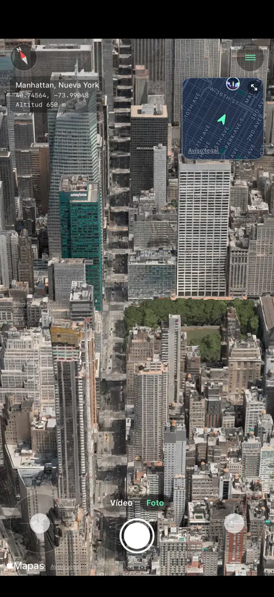
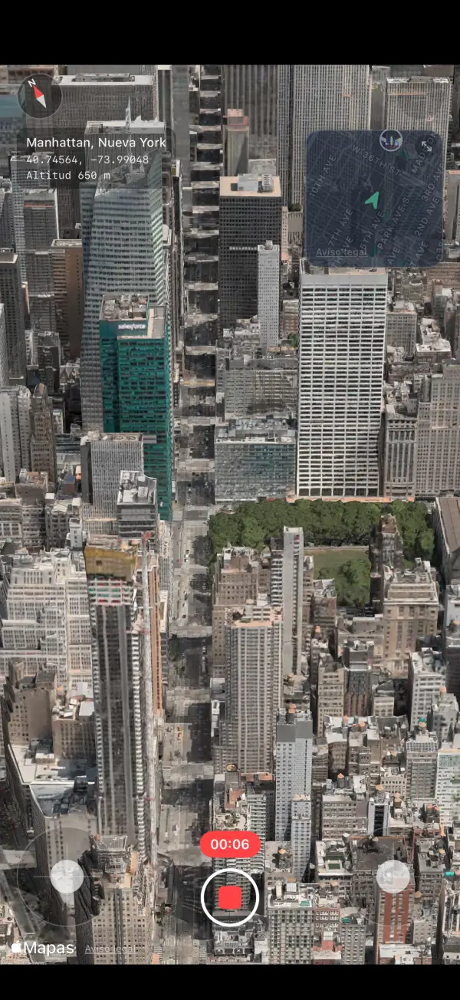
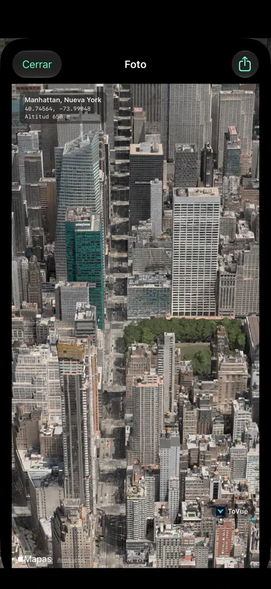
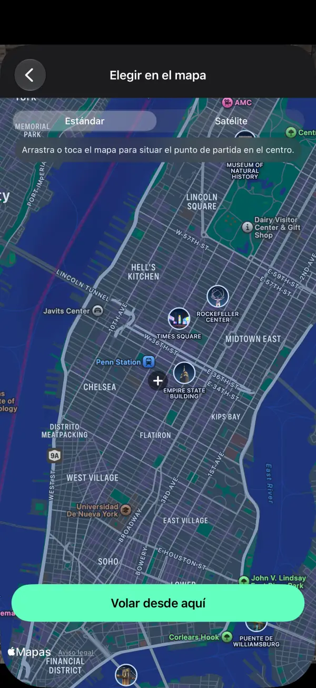
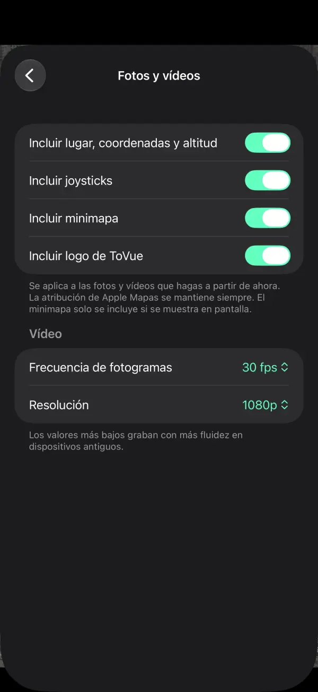

Sobrevuela mapas 3D como un dron.
Vuela sobre las ciudades del mundo en iPhone y iPad.
Guarda la vista en foto o en vídeo: solo el mapa, sin los controles.
 Gratis · Sin registro · Sin acceso a tu ubicación
Gratis · Sin registro · Sin acceso a tu ubicaciónQué puedes hacer
Vuela con los joysticks y guarda la vista tal como la ves.
Vuela libremente
Sube, gira y avanza con dos joysticks en pantalla, o con un solo dedo en el modo a una mano.
Minimapa
Mira dónde estás y hacia dónde miras. Tócalo para elegir un nuevo lugar en el mapa.
Graba vídeo
Cambia entre Foto y Vídeo como en la app Cámara y graba tu vuelo.
Fotos solo del mapa
Captura la vista sin los controles y, si quieres, con el lugar, las coordenadas y la altitud.
Ve a cualquier parte
Busca o elige un punto en el mapa y empieza a volar desde allí al instante.
11 idiomas
Español, inglés, japonés, chino, coreano y más. Para iPhone y iPad.
Capturas de pantalla





Precios
Todo es gratis. ¿Prefieres sin anuncios? Compra una sola vez.
Básico
- Todas las funciones de vuelo, foto y vídeo
- Un banner y un anuncio a pantalla completa tras cambiar de lugar
- Logo de ToVue en fotos y vídeos
Eliminar anuncios y logo de ToVue
- Una sola compra, no es una suscripción
- Ningún anuncio
- Opción de quitar el logo de ToVue de fotos y vídeos
Conviene saber
- ToVue es un visor de mapas virtual. No controla un dron real y no es una herramienta de navegación ni de planificación de vuelos.
- Los edificios y el relieve 3D proceden de Mapas de Apple y su nivel de detalle varía según la zona.
- Se necesita conexión a internet. ToVue nunca usa el GPS ni pide tu ubicación.
- La atribución de Mapas de Apple siempre se mantiene en fotos y vídeos.
Sal a capturar la vista desde el cielo.
Gratis · Sin registro · Sin acceso a tu ubicación